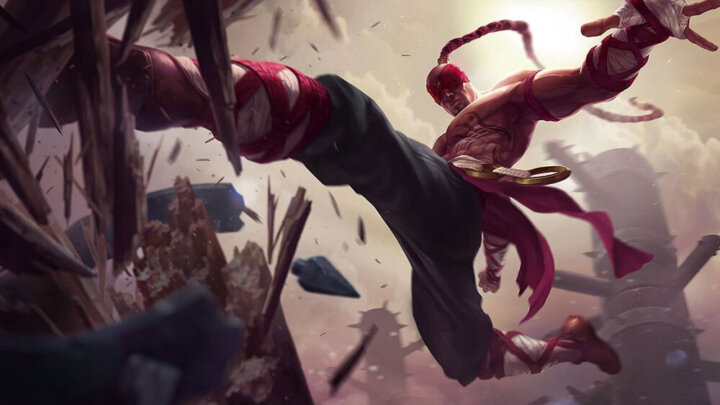
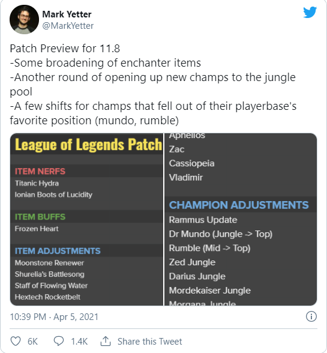

League of Legends patch 11.8 preview: Lee Sin viable again and more off-role jungle changes
The preview of the newest League of Legends patch 11.8 has been released and we can expect quite a bit of changes to recently underwhelming jungle champs, making their life a bit easier.
Among the champions that are getting nerfs are some prevalent picks, such as Thresh, Orianna and Gnar. Annie and Yorick are also deemed a little too strong as of now. When it comes to buffs we see Lee Sin as the prime buff candidate, but some of the mages who fell out of the meta such as Cassiopeia and Leblanc will also be made stronger. Finally, We’ll get a buff to champions such as Aphelios, Zac and Vladimir as well.
One of the biggest changes that will come with this patch is certain champions being adjusted towards certain roles alongside the new Rammus update. Dr Mundo and Rumble will see some changes that make their lives as top laners a bit more interesting again. Furthermore multiple off-role picks in the jungle such as Zed, Darius, Mordekaiser, Morgana and Diana will be made a little easier.
On the item front the patch will bring some nerfs to Titanic Hydra, which is very strong right now, and Ionian Boots of Lucidity, which offer a little bit too much and have become too prevalent. Frozen Heart will receive a buff, while enchanter items will be adjusted to make them a little more useful and enticing to pick up.